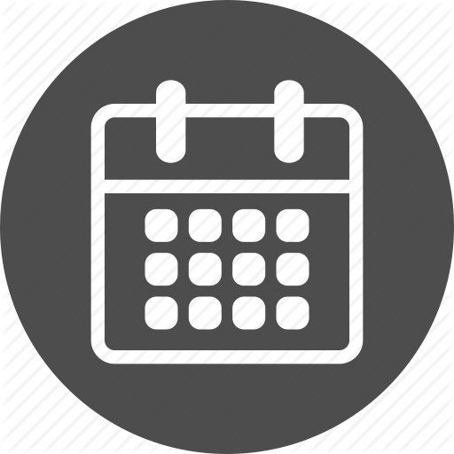
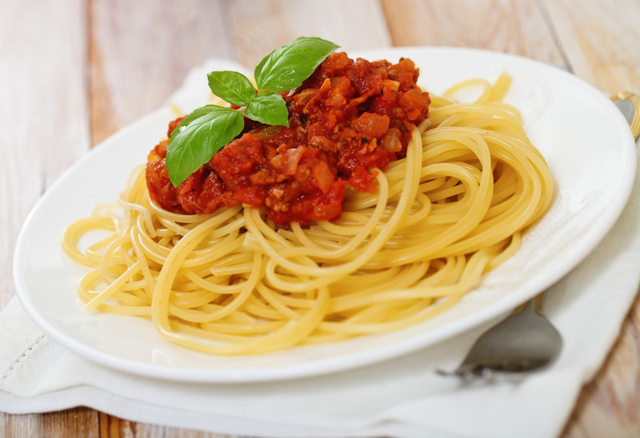
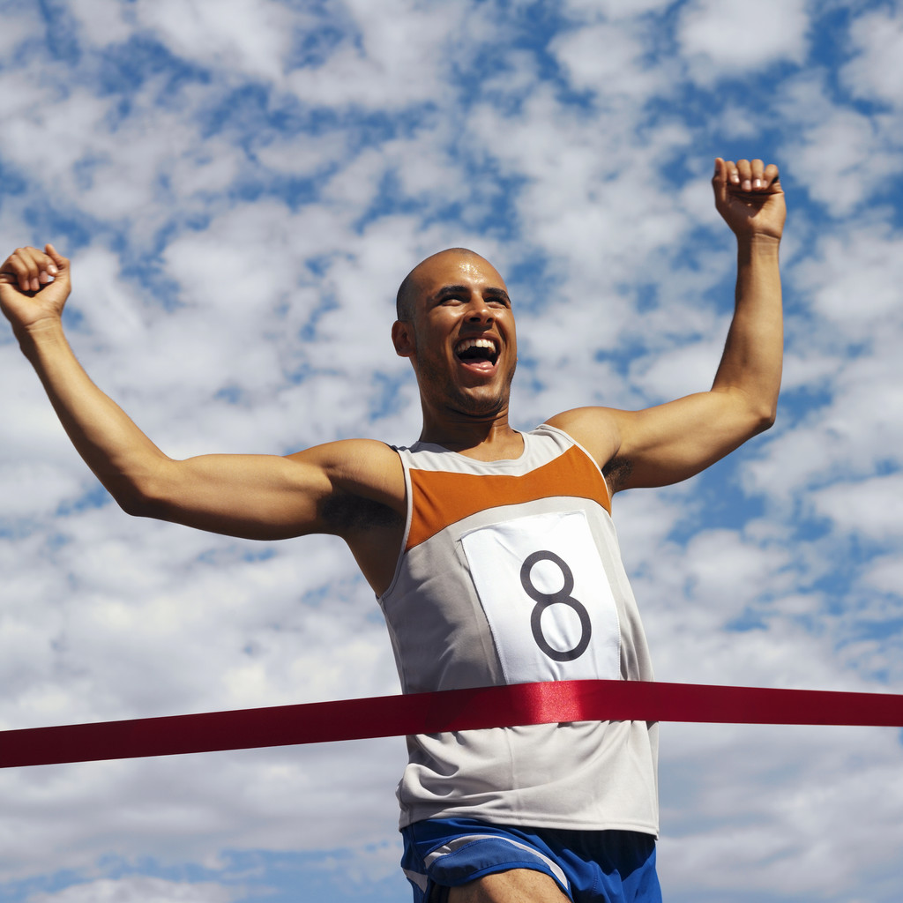
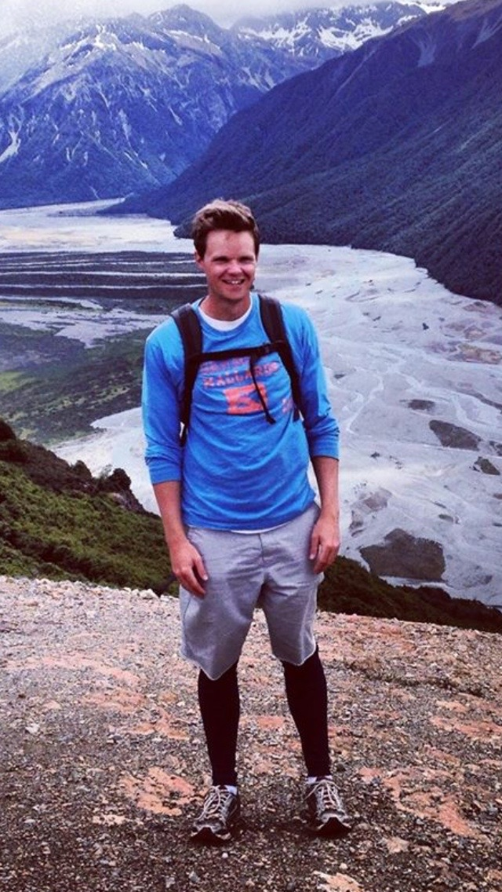

So you want to run a Marathon?
Just so you know what you are getting into. This might be the hardest thing that you have ever done. There is going to me sore muscles, blood, maybe even tears. When you cross that finish line though, it will all be worth it. If that does not deter you then just click that button below and let us get this show on the road. Click Here to Begin
Oh you are still here perfect!
We are just going to make the a quick list of the things that are going to help you succeed in this great endeavour.
Some of the things on this list are not mandatory but will just make the experience more enjoyable. Plus getting new things makes it all that much more fun because you get to try out all the new equipment that you have bought and you will be that much more invested.
Back NextOkay we have our, equipment now we just need to figure out how many miles we need to start running. Luckily the internet is chalk full of examples of schedules which I have included a link to at the bottom of the page.
Before you go and select a schedule for yourself though, I would suggest taking a couple of 3 mile runs to figure out your per mile pace. With that information you will be able to pick a schedule that best fits your fitness level.
Great Schedules here
Back NextLike I mentioned earlier there are gonna be days when you think you are too tired, too sore, or just don't want to go out and run because it's raining. That is why you need to get a partner. If you have someone to go through the bad days and good days with it will be much harder to skip, because they are depending on you and you are depending on them.
So if you can find someone anyone to run with do it!
Back NextSince you are going to be running around 20 miles or more a week for 3 to four months you need to have some fuel to keep you going. That is where a balanced diet comes in. The day before big runs it is a good idea to carb up. The go to favourite is pasta for most runners. But try a couple different meal plans and go with whatever works best for you. I included a link at the bottom of the page to a website with alot more great information.
Alot more great information here
Back NextI know you want to run a marathon so you think, "why should I enter a pity 10k?" Well I will tell you that it is for your own good. A marathon can be daunting to think about if it is your first race ever. That is why doing a couple of small runs are great. They kind of give you a taste of the experience to come. It is like a small mile stone and something within the first couple of months of training to work towards. Lastly it is great way to meet and network in the running community, some of the people will meet will have been doing this for years and may have some great tips on what to expect and will have equipment hacks. They are a very welcoming group so draw on these peoples experience and embrace the community. Plus if you do not have a running partner yet you may find someone else who is training for a marathon as well.
Back NextToday is the day, you have come a long way and have run alot of miles so I only have a couple more tips for you. It is easy to get get caught up with all the other runners depending on where you are running your marathon there are going to be thousands maybe tens of thousands of people who are in this race. So keep your head about you and keep the pace you have been training for. If it feels too slow just remember that you still have 25 more miles ahead of you so do not fret. If you are comfortable with it sometimes they have pace runners with the appropriate minute per mile signs that keep that pace for the whole race. I could be a good way to meet some other runners and maybe make some friends to have a beer with afterwards. Take in all that excitement and cheers coming from thousands of people who come out to cheer on the runners.
You did it! Congratulations I knew you had it in you!
Back FinishSo a little about myself, I got into running several years ago and love to go out every now and again. I find it to be a great challenge to yourself where you are constantly trying to beat your best time. I have recently started learning development at Algonquin College and am in the first year of Mobile Application Design and Development. This course like running can be a challenge everyday where you are day and day out trying to do a better job on your current assignment then the last one. I hope you enjoyed the guide and that it inspired you to get out there and enjoy the world of running.
